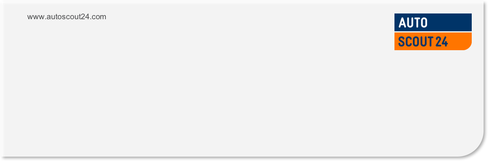

<!doctype html>
<html lang="en">

  <head>
    <meta charset="utf-8">

    <title>Pattern Matching</title>

    <meta name="description" content="Pattern Matching">
    <meta name="author" content="Diego Toharia">

    <meta name="apple-mobile-web-app-capable" content="yes" />
    <meta name="apple-mobile-web-app-status-bar-style" content="white-translucent" />

    <meta name="viewport" content="width=device-width, initial-scale=1.0, maximum-scale=1.0, user-scalable=no, minimal-ui">

    <link rel="stylesheet" href="css/reveal.css">
    <link rel="stylesheet" href="css/theme/white.css" id="theme">
    <link rel="stylesheet" href="css/deck.css">
    <link rel="stylesheet" href="//cdn.jsdelivr.net/font-hack/2.018/css/hack.min.css">

    <!-- Code syntax highlighting -->
    <link rel="stylesheet" href="lib/css/github.css">

    <!-- Printing and PDF exports -->
    <script>
      var link = document.createElement( 'link' );
      link.rel = 'stylesheet';
      link.type = 'text/css';
      link.href = window.location.search.match( /print-pdf/gi ) ? 'css/print/pdf.css' : 'css/print/paper.css';
      document.getElementsByTagName( 'head' )[0].appendChild( link );
    </script>

    <style>
      section.smaller>pre {
        font-size: 50%;
      }

      section.expand>pre code {
        max-height: 500px;
      }

      section.expand>pre {
        width: 100%;
      }

      .reveal section img {
        border: none;
        box-shadow: none;
      }

      .reveal .slide-number {
        background-color: white;
      }

      .hljs-comment {
        color: #006400;
      }

      .reveal section img.table-icon {
        margin: 10px;
        margin-right: 0px;
        margin-left: 60px;
        width: auto;
        height: 85%;
        vertical-align: middle;
      }
    </style>

    <!--[if lt IE 9]>
    <script src="lib/js/html5shiv.js"></script>
    <![endif]-->
  </head>

  <body>

    <div class="reveal">

      <!-- Any section element inside of this container is displayed as a slide -->
      <div class="slides">

<!-- ########################################################################################### -->
<!-- START                                                                                       -->
<!-- ########################################################################################### -->

<section>

<section data-markdown data-background="images/background.png"><script type="text/template">
<h3 style="position: absolute; display: block; top: -50px; left: 0px;">Pattern Matching</h3>
<p style="position: absolute; display: block; top: 0px; left: 0px;">Diego Toharia</p>



</script></section>

<section data-markdown><script type="text/template">
### Materials

- Slides are found [in Confluence](http://confluence.as24.local/display/TechnologyChange/Scala+School)
- Code for exercises is found at https://github.com/AutoScout24/scala-school/tree/master/pattern-matching

</script></section>
</section>

<section>
<section data-markdown class="smaller expand"><script type="text/template">
### Pattern matching with case classes

```scala
trait T
case class A(x: Int, y: String) extends T
case class B(z: Double) extends T

def fun(t: T) = t match {
  case A(a, b) => a*b.toInt
  case B(42.0) => 42
  case b: B => b.z.toInt
  case _ => 0
}
```
</script></section>

<section data-markdown><script type="text/template">
### The domain

```scala
trait User {
  def name: String
  def score: Int
}

case class FreeUserCC(name: String, score: Int, upgradeProbability: Double)
       extends User

case class PremiumUserCC(name: String, score: Int) extends User
```
</script></section>

<section data-markdown><script type="text/template">
### Exercise 1a

- Implement method `personalizedGreeting` that distinguishes between a free user,
  a premium user and a potential premium user by matching over case classes
  `FreeUserCC` and `PremiumUserCC`.

- A potential premium user is a free user with an upgrade probability of 1.0.
</script></section>

<section data-markdown><script type="text/template">
### Case classes

You get for free:
- Public fields for constructor arguments
- "Natural" hashCode/equals/toString methods
- A companion object with
  - apply factory method
  - unapply extractor method
</script></section>

<section data-markdown><script type="text/template">
### Constructors and Extractors

```scala
case class A(x: Int, y: String)
```

gives you

```scala
class A(val x: Int, val y: String)

object A {
  def apply(x: Int, y: String) = new A(x, y)
  def unapply(a:A): Option[(Int,String)] = Some((a.x, a.y))
  // ... and even more
}
```
</script></section>


<section data-markdown><script type="text/template">
### Constructors and Extractors

```scala
A(1, "str") match {
  case A(a,b) => ???
}

class A(val x: Int, val y: String)

object A {
  def apply(x: Int, y: String) = new A(x, y)
  def unapply(a:A): Option[(Int,String)] = Some((a.x, a.y))
  // ... and even more
}
```
</script></section>

<section data-markdown><script type="text/template">
### Exercise 1b

- Implement companion objects with adequate unapply methods for non-case classes
  `FreeUser` and `PremiumUser`.

- Extend `personalizedGreetings` so that it also works with those non-case classes.
</script></section>

<section data-markdown><script type="text/template">
### Pattern matching on lists

```scala
val xs = List(2, 4, 6)
xs match {
  case List(a, b, c) => a + b + c
  case List(a, b) => a * b
  case _ => 0
}
```
</script></section>

<section data-markdown><script type="text/template">
### Pattern matching on lists

```scala
val xs = List(2, 4, 6)
xs match {
  case a :: b :: c :: _ => a + b + c
  case a :: b :: _ => a * b
  case _ => 0
}
```
</script></section>

<section data-markdown><script type="text/template">
### Pattern matching: unapplySeq

```scala
object SequenceTest {
  def unapplySeq(o: List[Int]): Option[Seq[Int]] = ???
}

val xs = List(2, 4, 6)
xs match {
  case SequenceTest(a, b, _*) => a + b
  case _ => 0
}
```
</script></section>

<section data-markdown><script type="text/template">
### Pattern matching: guards

```scala
case class Player(name: String, score: Int)

def printMessage(player: Player) = player match {
  case Player(_, score) if score > 100000 => println("Wow!")
  case Player(name, _) => println("Hey, " + name + "!")
}
```
</script></section>

<section data-markdown><script type="text/template">
### Exercise 2a

- Implement a method that selects the third user of list of users and returns a personalized win message if this user is a free user with a low upgrade probability (`<0.3`)
- This should be possible as a one-line case.
</script></section>

<section data-markdown><script type="text/template">
### Pattern matching: boolean extractor

```scala
case class Player(name: String, score: Int)

object ProfiGamer {
  def unapply(p: Player): Boolean = p.score > 100000
}

def printMessage(player: Player) = player match {
  case p @ ProfiGamer() => println("Wow!")
  case _ => println("Hey, dude!")
}
```
</script></section>

<section data-markdown><script type="text/template">
### Patterns everywhere
```scala
def scores: List[Int] = List(1, 2, 3)

val best :: rest = scores
```
</script></section>

<section data-markdown><script type="text/template">
### Patterns everywhere
```scala
val lists = List(1, 2, 3) :: List.empty :: List(5, 3) :: Nil

for {
  list <- lists
  if (list.size > 0)
} yield list.size

for {
  head :: tail <- lists
} yield (head :: tail).size

for {
  list @ head :: _ <- lists
} yield list.size

```
</script></section>

<section data-markdown><script type="text/template">
### Matching on regular expressions
```scala
def getMakeModelIdFromCsvFileName(name: String) = {
  val csvPattern = "m_(\\d+)_(\\d+)\\.csv".r
  name match {
    case csvPattern(makeId, modelId) => (makeId.toInt, modelId.toInt)
    case _  => throw new IllegalArgumentException("...")
  }
}
```
</script></section>

</section>

<section>
<section data-markdown><script type="text/template">
# Q & A

</script></section>

</section>

<!-- ########################################################################################### -->
<!-- END                                                                                         -->
<!-- ########################################################################################### -->

      </div>

    </div>

    <script src="lib/js/head.min.js"></script>
    <script src="js/reveal.js"></script>

    <script>

      // Full list of configuration options available at:
      // https://github.com/hakimel/reveal.js#configuration
      Reveal.initialize({
        controls: true,
        progress: true,
        history: true,
        center: true,

        slideNumber: 'c',
        transition: 'slide', // none/fade/slide/convex/concave/zoom

        // Optional reveal.js plugins
        dependencies: [
          { src: 'lib/js/classList.js', condition: function() { return !document.body.classList; } },
          { src: 'plugin/markdown/marked.js', condition: function() { return !!document.querySelector( '[data-markdown]' ); } },
          { src: 'plugin/markdown/markdown.js', condition: function() { return !!document.querySelector( '[data-markdown]' ); } },
          { src: 'plugin/highlight/highlight.js', async: true, callback: function() { hljs.initHighlightingOnLoad(); } },
          { src: 'plugin/zoom-js/zoom.js', async: true },
          { src: 'plugin/notes/notes.js', async: true }
        ]
      });
    </script>

  </body>
</html>
